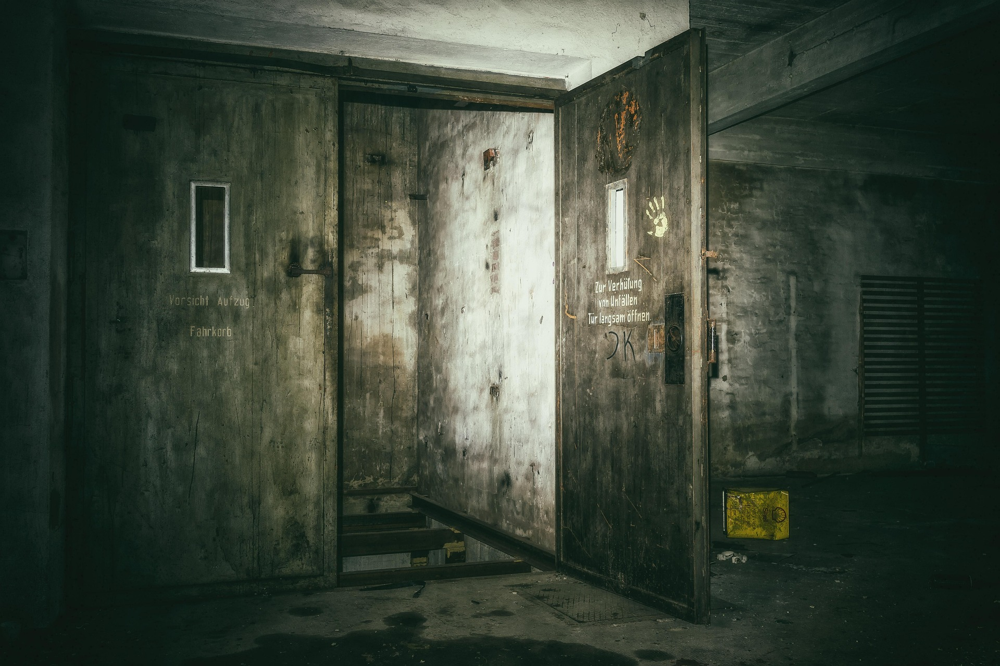
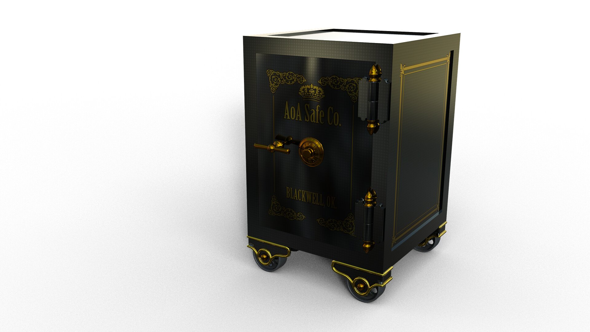

La historia
El señor Ortega fue vigilante nocturno durante treinta años.
Cada noche bajaba al sótano a revisar una vieja caja fuerte.
El 29 de octubre dejó una nota:
«algo golpea desde dentro».
A la mañana siguiente su linterna estaba
encendida rota al pie de la escalera.
En el sótano el aire es húmedo, huele a óxido (Fe2O3) y la temperatura no pasa de 10 oC. La caja sigue cerrada.
«Nadie ha conseguido abrirla. Todavía.»
Lo que encontramos en el sótano
- Una linterna rota.
- Una caja fuerte con:
- tres ruedas de números,
- arañazos por fuera,
- golpes por dentro.
- El diario del vigilante, con tres páginas marcadas


El diario del vigilante
Lo encontramos escondido. Leedlo con cuidado...